Enxoval de logos.
Pacote oficial de arquivos da marca, primeiro lote. Quatro famílias (coroa, wordmark, lockup completo, lockup com tagline), cinco versões cromáticas cada, em SVG vetorial e PNG transparente nas resoluções de favicon a cartaz. Para uso por arquitetos parceiros, fornecedores de papelaria, gráficas, agências de mídia e equipe interna.
Coroa isolada
Símbolo isolado. Para favicon, watermark, etiqueta interna, hot-stamp, avatar pequeno, livro de visitas. Não substitui o lockup em primeiro contato com a marca.

Wordmark
Apenas o nome em Fraunces italic com ponto mostarda e HOME DESIGN em mono. Para assinatura de e-mail, rodapé de site, faixa de vitrine, watermark, qualquer aplicação compacta.
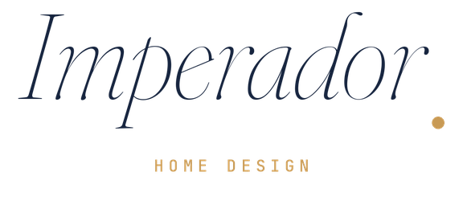
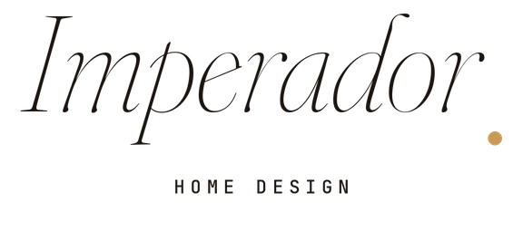
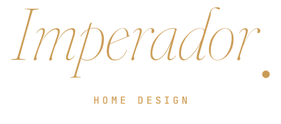
Lockup completo
Coroa + wordmark. Aplicação principal da marca. Capa, fachada, papelaria institucional, perfil do Instagram, embalagem, qualquer aplicação onde a marca aparece em primeiro contato.
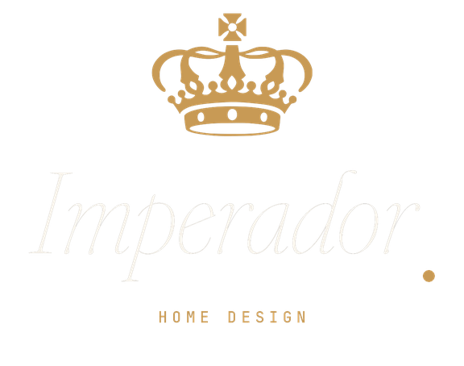
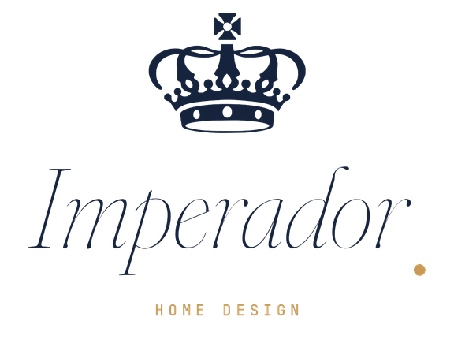
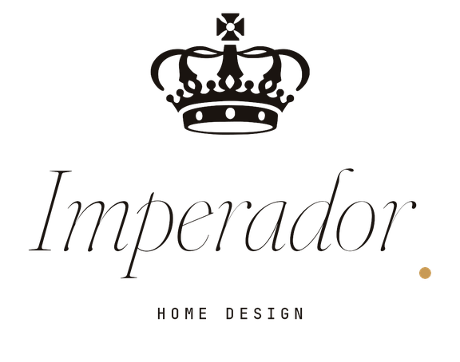
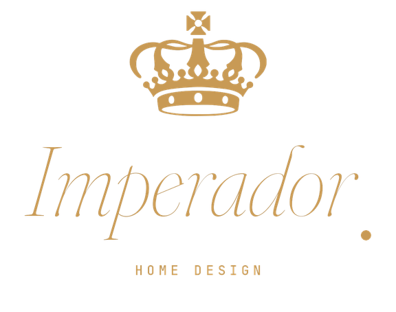
Lockup com tagline
Lockup completo + horizonte com ponto + "Para a casa que você sonhou." em italic. Versão assinatura para vitrine, cartão de visita, envelope, assinatura de e-mail da fundadora, bio do Instagram.
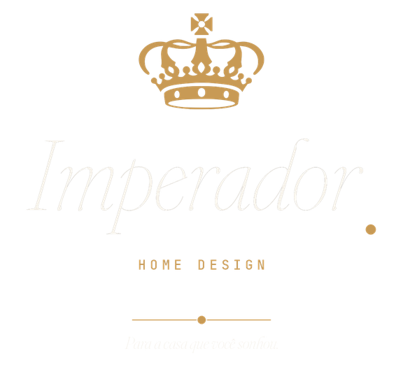
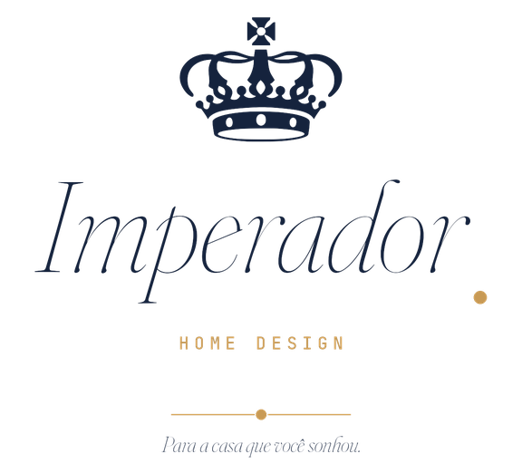
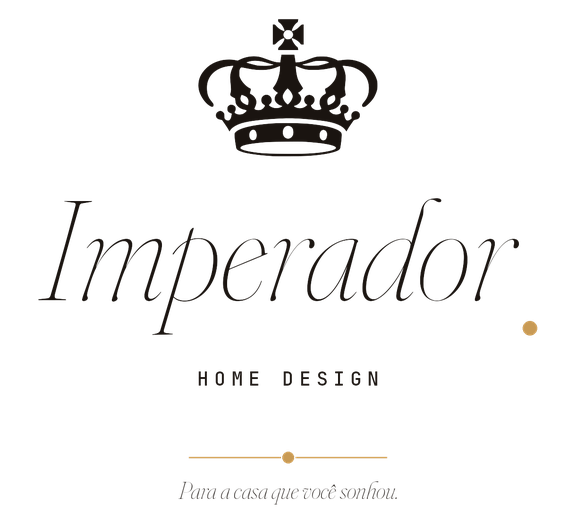
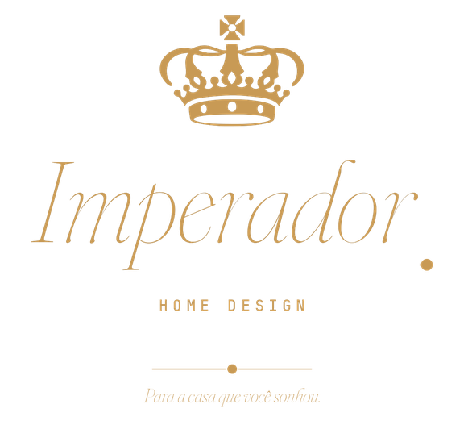
Paleta canônica
As seis cores oficiais. Toda peça assinada pela marca usa esta paleta. Mostarda é o único saturado, racionado para signature.
Regras mínimas de uso
- Hierarquia. O lockup é sempre vertical. Coroa em cima, wordmark embaixo. Coroa à esquerda do wordmark em arranjo horizontal não existe na marca.
- Tipografia. O wordmark é Fraunces italic 300 sempre. "HOME DESIGN" é JetBrains Mono 500, caps, letter-spacing 0,32em. Não trocar.
- Ponto-mostarda. O ponto após "Imperador" é a signature da marca. Não remover, não mover, não trocar de cor.
- Tagline. "Para a casa que você sonhou." só aparece no lockup com tagline (família 04), separada por horizonte com ponto. Nunca atrelada ao wordmark sozinho.
- Cor. Apenas as cinco versões oficiais. Nada de metalizado, ouro, prata, bronze. Não usar sobre preto puro.
- Tamanho mínimo. Lockup completo: 36 mm impresso, 144 px em tela. Wordmark sozinho: 24 mm, 96 px. Abaixo disso, usar só a coroa.
- Área de proteção. Margem mínima ao redor do lockup igual à altura da coroa. Nenhum outro elemento entra nessa margem.
Regras detalhadas estão na Parte IX do brand book oficial (slides 48 a 53).